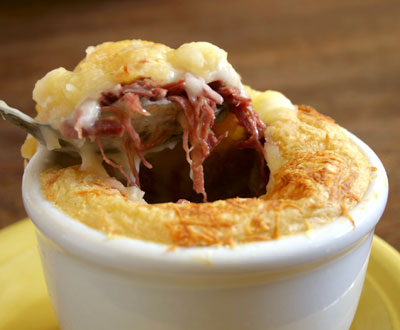
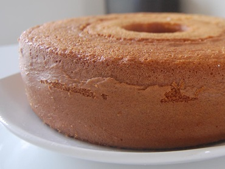

Escondidinho de carne seca

Ingredientes
Ingredientes para o pure
- 1,5 kg de mandioquinha descascada e cozida
- 4 colheres (sopa cheias) de margarina
- 1/2 litro de leite
- sal a gosto
Ingredientes para o recheio
- 1 kg de carne seca (com pouca gordura)
- 2 colheres (sopa) de azeite (sendo uma para untar o refratário)
- 1 cebola média picadinha
- 3 dentes de alho amassados
- 2 copos de requeijão (400 g)
Ingredientes para cobrir
- 200 g de parmesão ralado no ralo grosso
Modo de preparo
Pure
- Amasse as mandioquinhas cozidas e frias
- Coloque numa panela em fogo médio
- Acrescente a margarina e o leite
- Mexa até tomar a consistência de purê
- Reserve.
Recheio
- Limpe a carne seca retirando a gordura (se houver)
- Corte em pedaços pequenos
- Coloque numa panela com água fervendo para dessalgar rapidamente
- Deixe cozinhando por 20 minutos
- Descarte a água
- Esfregue a carne em água corrente
- Coloque os pedaços de carne na panela de pressão com 100 ml de água (apenas para não queimar no fundo) por 20 min (contados após pegar pressão)
- Retire a carne da panela e deixe esfriar
- Desfie
- Numa outra panela coloque 1 colher (sopa) de azeite, a cebola picadinha, os alhos amassados e doure
- Acrescente a carne seca desfiada e refogue
- Acerte o sal, se necessário, e reserve.
Montagem
- Pegue um refratário (de vidro ou cerâmica)
- Unte com 1 colher (sopa) de azeite
- Espalhe no fundo metade do purê
- Espalhe toda a carne seca refogada, formando a 2ª camada
- Sobre a carne seca, espalhe o requeijão, formando a 3ª camada
- Coloque a outra metade do purê, formando a 4ª camada
Cobertura
- Sobre a última camada, espalhe o queijo parmesão ralado no ralo grosso
- Leve ao forno médio (180 a 200ºC) por 20 a 30 minutos até dourar
- Retire do forno e sirva com salada Caesar
Bolinho de Chuva

Ingredientes
- 2 ovos
- 2 colheres (sopa) de açúcar
- 1 pitada de sal
- 3 xícaras (chá) de farinha de trigo
- 1 colher (sobremesa) de fermento em pó
- 1 xícara (chá) de leite
- Óleo para fritar
- Açúcar e canela para polvilhar
Modo de preparo
- bata as claras em neve junte as gemas bata mais um pouco, acrescente açúcar, o sal, o fermento e, aos poucos, a farinha de trigo, alternando-a com leite até formar uma massa mole
- Aqueça o óleo e, separe porções da massa com uma colher e vá colocando-as aos poucos
- Deixe fritar até ficar dourados por igual
- Sirva-os quentes polvilhados com açúcar e canela
Bolo Simples

Ingredientes
- 2 xícaras de açúcar
- 3 xícaras de farinha de trigo
- 4 colheres de margarina
- 3 ovos
- 1 e 1/2 xícara de leite de vaca
- 1 colher (sopa) bem cheia de fermento em pó
Modo de preparo
- Bata as claras em neve e reserve
- Misture as gemas, a margarina e o açúcar até obter uma massa homogênea
- Acrescente o leite e a farinha de trigo aos poucos sem parar de bater
- Por último, adicione as claras em neve e o fermento
- Despeje a massa em uma forma grande de furo central untada e enfarinhada
- Asse em forno médio (180° C), preaquecido, por 40 minutos ou ao furar com um garfo, este saia limpo